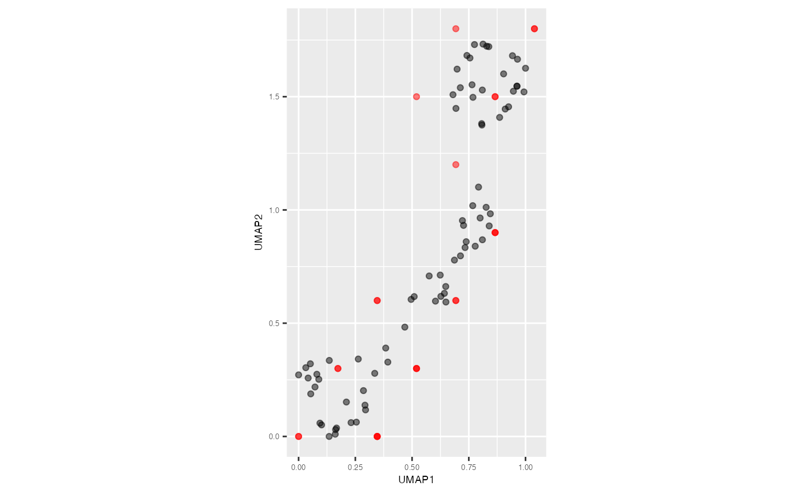

Some Non-linear dimension reduction techniques (NLDR), such as
t-distributed stochastic neighbor embedding (tSNE) do not provide
mechanism to employ prediction like Uniform manifold approximation and
projection (UMAP). In that case, the predict_2d_embeddings
function serves as a valuable tool to predict 2D embeddings, regardless
of the NLDR technique.
model <- fit_high_d_model(training_data = s_curve_noise_training,
nldr_df_with_id = s_curve_noise_umap_scaled)
df_bin_centroids <- model$df_bin_centroids
df_bin <- model$df_bin
predict_emb_list <- predict_2d_embeddings(test_data = s_curve_noise_test,
df_bin_centroids = df_bin_centroids,
df_bin = df_bin, type_NLDR = "UMAP")
predict_df <- as.data.frame(do.call(cbind, predict_emb_list))
predict_df
#> pred_UMAP_1 pred_UMAP_2 ID pred_hb_id
#> 1 0.0000000 0.0 5 1
#> 2 0.8660254 0.9 10 18
#> 3 0.6928203 1.8 13 33
#> 4 0.3464102 0.0 18 2
#> 5 0.5196152 0.3 27 7
#> 6 0.3464102 0.0 28 2
#> 7 0.8660254 0.9 29 18
#> 8 0.8660254 1.5 30 28
#> 9 0.0000000 0.0 32 1
#> 10 0.6928203 0.6 36 13
#> 11 0.3464102 0.0 48 2
#> 12 0.5196152 0.3 49 7
#> 13 0.6928203 0.6 50 13
#> 14 1.0392305 1.8 53 34
#> 15 0.3464102 0.6 58 12
#> 16 0.3464102 0.6 61 12
#> 17 0.1732051 0.3 68 6
#> 18 0.5196152 1.5 82 27
#> 19 0.5196152 0.3 83 7
#> 20 0.3464102 0.0 85 2
#> 21 0.8660254 0.9 86 18
#> 22 0.6928203 1.2 88 23
#> 23 0.1732051 0.3 90 6
#> 24 1.0392305 1.8 92 34
#> 25 0.8660254 1.5 98 28
s_curve_noise_umap_scaled |>
ggplot(aes(x = UMAP1,
y = UMAP2,
label = ID))+
geom_point(alpha=0.5) +
geom_point(data = predict_df, aes(x = pred_UMAP_1, y = pred_UMAP_2),
color = "red", alpha=0.5) +
coord_equal() +
theme(plot.title = element_text(hjust = 0.5, size = 18, face = "bold"),
axis.text = element_text(size = 5),
axis.title = element_text(size = 7))